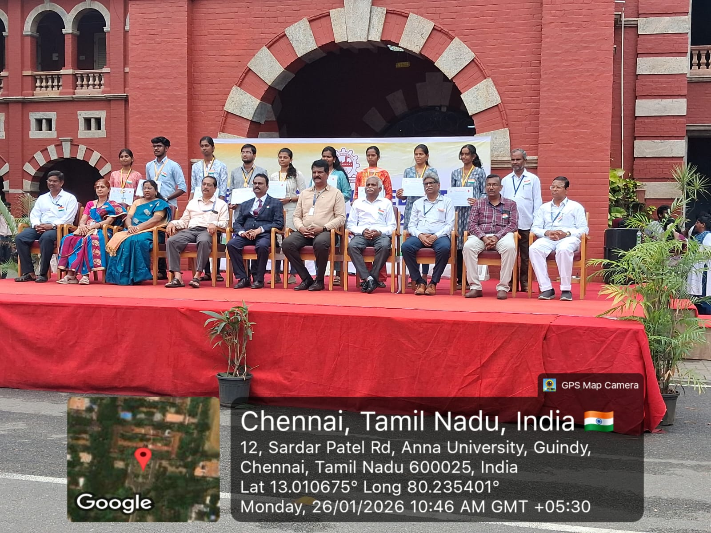
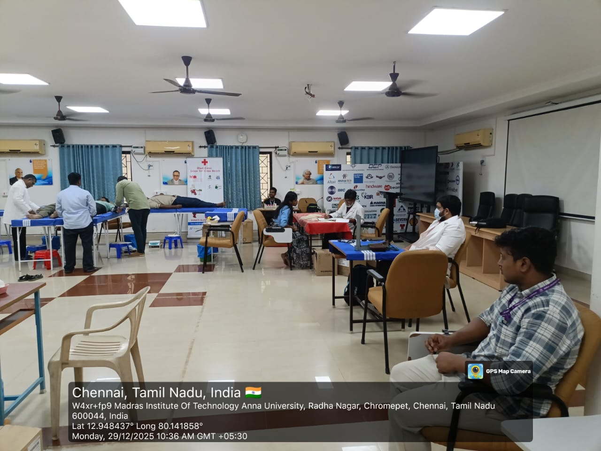
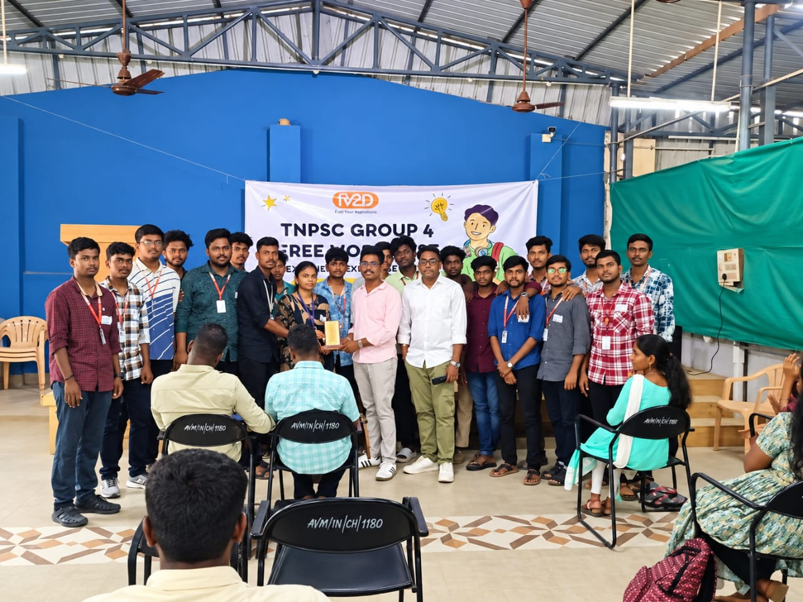
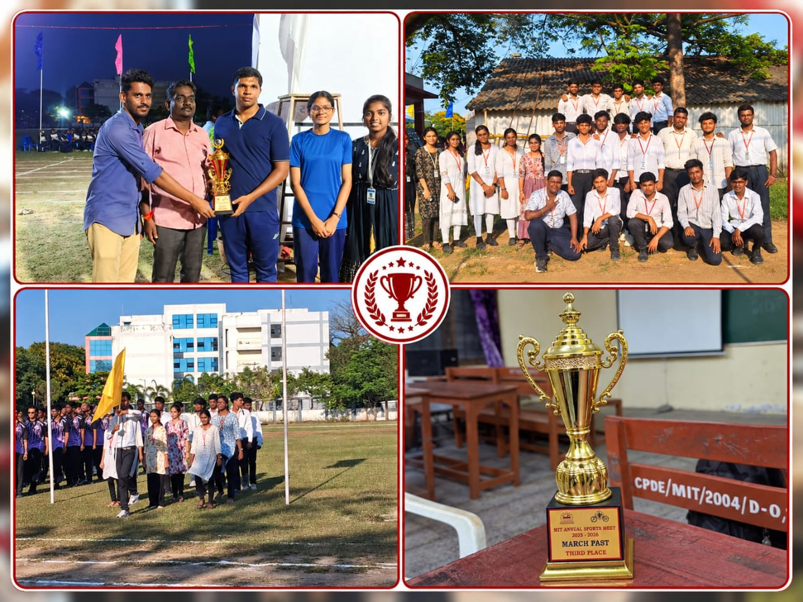

YRC MIT ACHIEVEMENTS
Milestones of Service
A collection of moments, recognitions and contribution that reflect the spirit of services at YRC MIT.

Outstanding Student Recognition
MIT students were recognised for their active participation, dedication, and contribution during the Republic Day celebrations. Their teamwork, discipline, and spirit of service reflected their commitment to the MIT community.
Best Volunteer Award
YRC MIT volunteers were recognised for their dedicated contribution and active participation during the Independence Day celebrations. The recognition reflects their commitment, teamwork, discipline, and spirit of service.


100+ Blood Donations
YRC MIT successfully conducted a blood donation initiative with more than 100 students and volunteers contributing to the cause. The programme encouraged voluntary blood donation and highlighted the importance of community service and helping save lives.
Scribe Work for TNPSC Examination
YRC MIT volunteers provided scribe support for candidates appearing for the TNPSC examination. Through this service, volunteers assisted candidates during the examination and demonstrated empathy, responsibility, and commitment towards inclusive community service.


International Day Against Drug Abuse and Illicit Trafficking
YRC MIT volunteers participated in a rally to spread awareness about drug abuse and promote healthy, responsible choices among young people.
Third Prize in Overall College
YRC MIT students proudly secured third prize in the overall college category during the MIT Annual Sports Meet 2025–2026. The achievement reflects the students' teamwork, discipline, dedication, and active participation in sports and campus activities.

Together, making a difference through service
Total Members
Students who have been part of the YRC MIT family.
Active Volunteers
Dedicated volunteers actively contributing to YRC initiatives.
Activities
Service, awareness, health, and community activities conducted.
Years of Service
A journey of volunteering, service, and community contribution.
Every Volunteer.
Every Action.
Every Impact.
Together, we continue to uphold the spirit of Health, Service and Friendship.